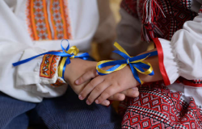
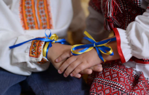

Україна
Після перемоги
Ми незламний народе великої країни! Ми пишаємось нашим минулим, цінуємо те, що маємо, яке обов’язково настане після перемоги!
Ми незламний народе великої країни! Ми пишаємось нашим минулим, цінуємо те, що маємо, яке обов’язково настане після перемоги!

історія
Фольклор розповідає правду, бо ми учасники, творці історії та представляємо її, так як є
Саме козаки були авторами та реалізаторами ідеї української держави та її легітимації у міжнародній спільноті як незалежної держави

Відвага,вірність,здатність до самопожертви, любов до Батьківщини - такі характеристики успадкував український народ у козаків
Турецький літописець Наїма писав про запоріжців: "Можна впевнено сказати, що неможливо на цілій землі сміливіших людей,які так мало б дбали про мвоє життя і так мало боялися смерті"
Блакитне небо на прапорі України та жовте жито, ще одна ознака
нашого прагнення думками відірватися від землі та полетіти в
безкрайнє небо, вийти за межі простору.
Саме тому українці реалізовували прагнення вийти за
межі за допомогою розвитку авіаконструкторських заводів.
Підприємство "Антонов" створило гордість України, який став
сиволом українського непереможного духу - "Мрію" - найбільший
транспорт літак у світі


Долучайся до марафону: будуємо нову омріяну Україну разом!
Поділись думками, якою ти хочеш бачити Україну після перемоги?
Україна першою у світі
запустила юридично
легалізовані цифрові паспорти
Багато іноземних туристів
їздить по Україні любуючись
нашими крайовидами
Наший імпорт зерна достигне
великих висот і тим самим
дає великий прибуток
нашій державі
Відбудована нова, гарна
Україна у якої є європейські
майданчики, рівні дороги,
гарні багато поверхівки
Із зв'язком того що ми вступили
до НАТО ми получаємо надійну
гарантію нашої безпеки
Українська мова в Україні
буде більш пріорітетнішою,
тому русс мови не буде
Майбутнє
Майбутнє України - це її люди!

Україна може сформолювати свої цінністі орієнтири та транслювати їх на весь світ, а саме: Можливо все навіть те, у що ви не вірите! А вихід за рамки самого себе - це більш гуманістично, ніж постійно прагнути вийти за рамки технологічного розвитку

Українці, як нація, стають зразком волевиявлення та прикладом побудови демократичних відносин не "згори до низу", а "знизу догори"!

Україна стає найбільш популярним та поширеним символом свободи, віри, правди та сміливості у всьому світі. Все буде Україна!

Україна запрошує до першого в світі проекту колективної відбудови країни, в якій будуть задіяні ініціативи різних країн світу.Таким чином Україна дає можливість всьому світові відчути, що таке коликтивна стратегія та транслює нову етику відносин у світі

Україна згадає своє прагнення до неба та сонця, й запропонує новий проект: щоб закінчити війни на Землі, давайте будемо співпрацювати для нашого нового життя в космосіі
Ми - нація вільних людей, які будують нову свою країну!

 


Завантаж собі патріотичні наліпки


{kind=link}
{kind=link}
{kind=link}
{kind=link}
{kind=link}
{kind=link}
{kind=link}
{kind=link}
{kind=link}
{kind=link}
{kind=link}
{kind=link}
{kind=link}
{kind=link}
{kind=link}
{kind=link}
{kind=link}